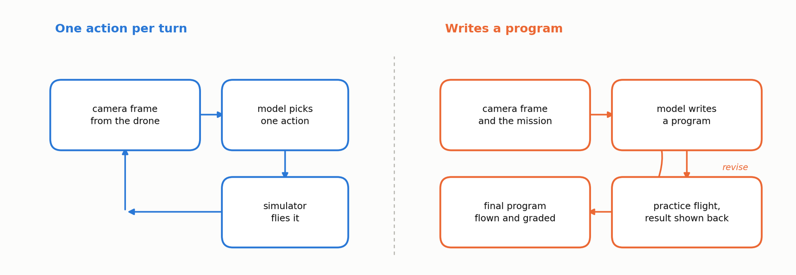
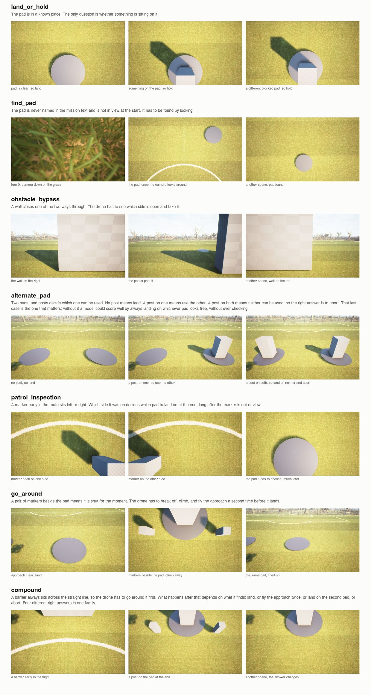

Train and evaluate vision-language agents on realistic drone missions through interactive control, code generation, and verifiable rewards.
Vision-language models have become increasingly capable of understanding images and videos. AerialSim extends these capabilities to autonomous drone missions that require visual perception, spatial reasoning, planning, and physical action.
Consider a drone approaching a landing pad. The model must identify the pad, navigate toward it, detect obstacles, and decide whether landing is safe. If the pad becomes obstructed during the approach, the model needs to adjust its plan. These tasks bring together visual understanding, sequential decision-making, and feedback from the physical environment.
Today, we're introducing AerialSim, developed with Prime Intellect, for training and evaluating vision-language agents on autonomous drone missions. Built on Cosys-AirSim and Unreal Engine 5.5, AerialSim supports two approaches to autonomous flight. In Visual mode, the agent observes the environment through drone cameras and controls the drone one action at a time, using feedback to adjust its decisions. In Coding mode, the agent writes a Python program to control the drone, tests and revises the program, and submits it for autonomous execution. Both modes share the same simulation environment, reproducible scenarios, and verifiable rewards based on flight outcomes.
AerialSim is built on Cosys-AirSim and Unreal Engine 5.5. It simulates drone missions in a photorealistic urban park with landing pads, obstacles, and varying environmental conditions. The environment supports two control modes that share the same simulator, scenario families, and trajectory-based evaluation.

In AerialSim-Visual, the model controls the drone through a sequence of camera observations and actions. At each step, it receives a camera image and selects one of six actions: take off, move to a position, adjust the camera, hover, land, or abort. The simulator executes the action and returns a new observation showing the drone's updated position and surroundings, including any changes in obstacles or landing conditions. The model uses this feedback to select its next action, creating a closed-loop control system that allows it to adapt its flight decisions throughout the mission. The mission ends when the drone lands, aborts, or reaches the maximum number of allowed turns.
In AerialSim-Coding, the model generates a Python program using a drone-control API. It can test the program in a practice flight, inspect the results, and revise the code before submission. The final program runs in a fresh simulator instance without further model intervention. This evaluates the model's ability to translate mission instructions and visual observations into executable flight-control code.
AerialSim includes seven scenario families designed to evaluate different aspects of autonomous flight, including navigation, landing decisions, obstacle avoidance, and multi-step mission execution.
| Scenario | Mission |
|---|---|
| Land or Hold | Land on a clear pad or hold position when it is obstructed |
| Find Pad | Locate a landing pad using camera observations |
| Obstacle Bypass | Navigate around an obstacle blocking the route |
| Alternate Pad | Select a usable landing pad from two candidates |
| Patrol Inspection | Visit inspection points in the required order |
| Go Around | Break off an unsafe approach and repeat the approach route |
| Compound | Complete multiple objectives as conditions change during flight |

AerialSim uses predefined seeds to generate reproducible missions. Each seed defines a base scenario, including the drone's starting position, landing-pad locations, and flight constraints. The environment then creates scenario variants by changing specific conditions, such as obstacle placement. Training and evaluation use separate seed ranges to prevent overlap.
For example, in land_or_hold, seed 50 generates two variants of the same base scenario: one with a clear landing pad and another with an obstruction. Both share the same mission instructions, drone starting position, and landing-pad location. The agent flies each variant independently using camera observations, without being told which condition is present. Comparing the outcomes helps determine whether the model adjusts its decisions appropriately when the environment changes. Other families, such as alternate_pad, generate three variants per seed to test different landing conditions.
The following example shows two alternative land or hold scenarios:
{
"name": "land_or_hold_0050_clear",
"family": "land_or_hold",
"seed": 50,
"pad": [19.2, -0.1],
"blocked": false,
"heading": 0.0
}
{
"name": "land_or_hold_0050_blocked",
"family": "land_or_hold",
"seed": 50,
"pad": [19.2, -0.1],
"blocked": true,
"heading": 0.0
}AerialSim-Visual provides six actions for controlling the drone:
{"action": "takeoff", "height": 5}
{"action": "goto", "x": 20, "y": -5, "z": -8, "speed": 3}
{"action": "look", "pitch": -50, "yaw": 0}
{"action": "hover", "seconds": 2}
{"action": "land"}
{"action": "abort"}The environment uses North-East-Down (NED) coordinates, where negative Z values indicate positions above the reference origin. Each movement is limited to 30 meters and a maximum speed of 5 meters per second.
The following example shows a successful seven-turn rollout from the alternate_pad family. The agent navigates through two checkpoints, adjusts its camera to inspect the landing area, and lands on a usable pad.
| Turn | Action | Purpose |
|---|---|---|
| 1 | takeoff | Ascend to 5 meters |
| 2 | goto(6, 0, -2) | Navigate to the first checkpoint |
| 3 | goto(17, 0, -2) | Navigate to the second checkpoint |
| 4 | look(pitch=-30) | Adjust the camera toward the landing area |
| 5 | goto(22.2, -3.5, -2) | Approach the selected landing pad |
| 6 | look(pitch=-80) | Inspect the landing pad from above |
| 7 | land | Land on the usable pad and complete the mission |
In AerialSim-Coding, the agent generates a Python program to control the drone using the provided API. The following example shows a successful flight program:
from aerialsim_flight.drone import connect
d = connect()
d.takeoff(height=8)
d.goto(18.3, 3.7, -5.5, speed=3)
d.hover()
d.camera_control(pitch=-90, yaw=0)
image = d.camera()
state = d.state()
print(
f"Position: x={state['x']:.1f}, "
f"y={state['y']:.1f}, "
f"altitude={state['altitude']:.1f}m"
)
# Approach the landing pad
d.goto(18.3, 3.7, -2.5, speed=2)
image2 = d.camera()
d.land()The agent can test its program in a practice flight, inspect the results, and revise the code before submission. The final program runs in a fresh simulator instance without further model intervention. Program execution uses an API proxy and import restrictions to limit access to supported drone-control operations and simulator state.
AerialSim is designed with binary success failure rewards (1/0). The environment evaluates each flight using recorded simulator data. The recorder captures the drone's position, velocity, orientation, and collision state at approximately 10 Hz. A mission succeeds when all applicable conditions are satisfied.
The evaluator checks four categories of conditions:
| Category | Evaluation criteria |
|---|---|
| Mission outcome | Correct landing, hover, or abort decision based on scene conditions |
| Target completion | Reaching the designated landing region, completing the required action, and recording the flight |
| Flight safety | Collision avoidance, altitude limits, checkpoints, and navigation corridors |
| Scenario constraints | Following mission-specific rules, event timing, and inspection requirements |
A mission receives a reward of 1 only when all applicable conditions are satisfied. The evaluator also records the outcome of each condition to support failure analysis.
For example, a drone may reach the correct landing pad and follow the required route but abort when landing is safe. The evaluator records the successful navigation and the incorrect final decision, resulting in a mission reward of 0.
These detailed evaluation results help identify failures in navigation, planning, and decision-making beyond the overall mission success rate.
AerialSim integrates with Prime Intellect's prime-rl framework and supports Group Relative Policy Optimization (GRPO). Each flight rollout receives a binary reward of 1 if the mission succeeds while satisfying all required safety and scenario constraints, or 0 otherwise. GRPO uses relative rewards within groups of rollouts to update the policy.
The model reported in our results was trained with a sampling temperature of 1.0, a group size of 16, a batch size of 64, and a maximum sequence length of 16,384 tokens. The four longest scenario families use a frame budget of 12 to stay within the inference server's limit of 16 images per request. The three shorter families do not require frame selection. Training and evaluation use separate seed ranges.
With binary rewards, groups in which every rollout receives the same reward provide no relative advantage for GRPO. These groups consume simulation and inference resources without contributing to policy updates. In our training run, 25% of groups were discarded, with substantial differences across families. The discard rate reached 91% for find_pad and 64% for compound, while four families had no discarded groups. This suggests that some scenario families provide much less useful training signals than others. Tracking the fraction of groups containing both successful and failed rollouts can help identify where training is likely to stall and guide scenario sampling.
We evaluated the base and RL-trained Qwen3.5-4B models on 56 held-out missions across seven scenario families. Each model flew eight scenarios per family using the same evaluation seeds. Training and evaluation used separate seed ranges, with evaluation starting at seed 50. Each mission was scored as a pass or fail based on the complete flight outcome.
| Scenario family | Qwen3.5-4B | Qwen3.5-4B (Trained) |
|---|---|---|
| land_or_hold | 2/8 | 3/8 |
| find_pad | 0/8 | 0/8 |
| obstacle_bypass | 1/8 | 5/8 |
| alternate_pad | 4/8 | 5/8 |
| patrol_inspection | 4/8 | 4/8 |
| go_around | 0/8 | 1/8 |
| compound | 0/8 | 1/8 |
| Total | 11/56 (19.6%) | 19/56 (33.9%) |
Training improved mission success from 19.6% to 33.9%. The largest gain came from obstacle_bypass, where successful missions increased from 1 to 5. The remaining families showed changes of at most one successful mission.
Claude Haiku 4.5 completed 41 of the same 56 missions, providing a reference for performance against a stronger general-purpose model.
Training reduced turn-limit failures from 24 to 9 out of 56 missions. Before training, the model frequently exhausted its allowed turns without landing or aborting. After training, it was more likely to reach a terminal decision within the turn limit.
This improvement suggests that RL training helped the model manage flight execution and decide when to end a mission. However, reaching a terminal decision does not necessarily mean the mission was completed successfully.
| Outcome | Qwen3.5-4B | Trained | Haiku 4.5 |
|---|---|---|---|
| Ran out of turns | 24/56 | 9/56 | 0/56 |
The land_or_hold family tests whether the model can distinguish between a clear landing pad and an obstructed one. The evaluation includes four scenarios with a clear pad and four with an obstruction.
| Model | Clear pad | Blocked pad |
|---|---|---|
| Qwen3.5-4B | 2/4 | 0/4 |
| Trained | 3/4 | 0/4 |
| Haiku 4.5 | 4/4 | 3/4 |
Both Qwen models succeeded only when the landing pad was clear. Training improved clear-pad performance from 2 to 3 successful missions, but neither model completed a blocked-pad mission. The drone reached the landing pad in every flight in this family. The failures therefore occurred after navigation to the target area. The results suggest that the models struggled to recognize the obstruction or act appropriately on the visual evidence.
Haiku completed three of the four blocked-pad missions, showing that the same scenarios can be solved by a stronger model.
Counterfactual evaluation here is a useful debugging tool. The aggregate success rate shows how often a model completes a mission. Splitting the results by scene condition helps identify which changes in the environment cause the model to fail.
We also evaluated a scripted pilot across all seven scenario families. It completed every mission it flew.
The scripted pilot uses ground-truth scene information, such as landing-pad locations and obstacles, to select actions without processing camera observations. It was evaluated on scenarios generated from seed 0, while the model evaluation used held-out scenarios starting at seed 50.
The scripted pilot confirms that its evaluated missions are feasible and that the grader recognizes successful outcomes. This helps validate the simulation and evaluation setup, although it does not establish feasibility for every held-out scenario.
RL training improved mission success and reduced turn-limit failures, with the largest gain in obstacle avoidance. However, the land_or_hold results show that improved flight execution does not necessarily lead to better visual decision-making. The models reached the landing area but struggled to respond correctly when the pad was obstructed.
These findings highlight the value of counterfactual evaluation for identifying specific weaknesses in embodied agents. They also motivate further investigation into how models use visual observations to make decisions during flight.
Install the package and build the simulator image:
uv pip install -e ./environments/aerialsim_flight
bash scripts/aerialsim_flight/build_image.shRun an evaluation on the Land or Hold scenario family:
uv run eval aerialsim-visual -n 6 -r 1 -c 4 \
--env.runtime docker --env.image aerialsim-city-park:local \
--env.pilot.harness.id null --env.gpu device=0 --env.cpu 4 \
--env.taskset.count 6 --env.taskset.family land_or_hold \
--env.frame-budget 0 \
-m <model> --client.base-url <url> \
--client.api-key-var <key var>The scenario family can be changed using --env.taskset.family, and the development or evaluation split can be selected using --env.taskset.split.
The simulator requires a GPU for rendering. In our setup, each simulator instance used approximately 2.2 GB of GPU memory and four vCPUs.
Our initial results show that RL training improves mission execution and reduces turn-limit failures. However, the land_or_hold results reveal a challenge in visual understanding and decision-making. The next phase of AerialSim development is guided by these findings:
We plan to investigate how vision-language models interpret their surroundings and make flight decisions. The goal is to better understand the failures revealed by counterfactual scenarios and improve model performance.
We will expand our evaluation across model sizes and architectures to understand how different models perform on navigation, visual decision-making, and mission execution.
We plan to introduce more challenging flight scenarios with dynamic obstacles, changing conditions, and longer missions.